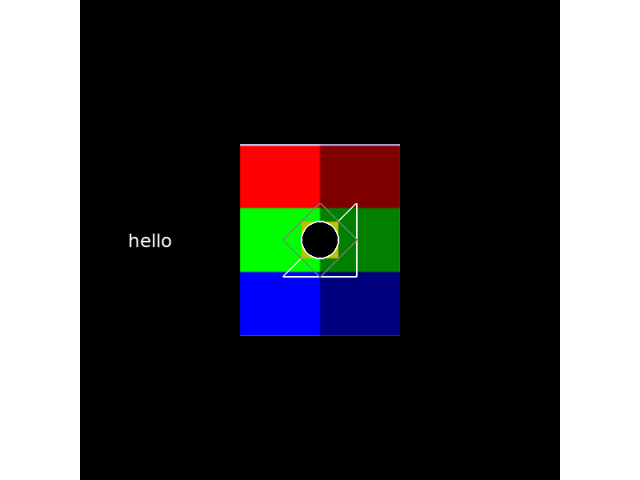

Note
Click here to download the full example code
Experiment drawing methods¶
expyfun provides multiple methods for drawing simple screen objects.
Out:
exp_name: test
date: 2019-04-26 20_33_39.256023
file: /home/circleci/project/examples/experiments/drawing_methods.py
participant: 2
session: 1
2019-04-26 20:33:39,256 - INFO - Expyfun: Using version 2.0.0.dev0 (requested dev)
2019-04-26 20:33:39,258 - INFO - Expyfun: Setting up sound card audio using pyglet backend
2019-04-26 20:33:39,414 - WARNING - Expyfun: Mismatch between reported stim sample rate (24414) and device sample rate (44100).Experiment Controller will resample for you, but this takes a non-trivial amount of processing time and may compromise your experimental timing and/or cause artifacts.
2019-04-26 20:33:39,415 - INFO - Expyfun: Setting up screen
2019-04-26 20:33:39,428 - EXP - Expyfun: Set screen visibility True
2019-04-26 20:33:39,489 - INFO - Expyfun: Initializing dummy triggering mode
2019-04-26 20:33:39,492 - INFO - Expyfun: Initialization complete
2019-04-26 20:33:39,492 - EXP - Expyfun: Participant: 2
2019-04-26 20:33:39,492 - EXP - Expyfun: Session: 1
2019-04-26 20:33:40,357 - INFO - Expyfun: Exiting
2019-04-26 20:33:40,360 - EXP - Expyfun: Audio stopped and reset.
# Author: Eric Larson <larsoner@uw.edu>
#
# License: BSD (3-clause)
import numpy as np
from expyfun import visual, ExperimentController
import expyfun.analyze as ea
print(__doc__)
with ExperimentController('test', session='1', participant='2',
full_screen=False, window_size=[600, 600],
output_dir=None, version='dev') as ec:
ec.screen_text('hello')
# make an image with alpha the x-dimension (columns), RGB upward
img_buffer = np.zeros((120, 100, 4))
img_buffer[:, :50, 3] = 1.0
img_buffer[:, 50:, 3] = 0.5
img_buffer[0] = 1
for ii in range(3):
img_buffer[ii * 40:(ii + 1) * 40, :, ii] = 1.0
img = visual.RawImage(ec, img_buffer, scale=2.)
# make a line, rectangle, diamond, and circle
line = visual.Line(ec, [[-2, 2, 2, -2], [-2, 2, -2, -2]], units='deg',
line_color='w', line_width=2.0)
rect = visual.Rectangle(ec, [0, 0, 2, 2], units='deg', fill_color='y')
diamond = visual.Diamond(ec, [0, 0, 4, 4], units='deg', fill_color=None,
line_color='gray', line_width=2.0)
circle = visual.Circle(ec, 1, units='deg', line_color='w', fill_color='k',
line_width=2.0)
# do the drawing, then flip
for obj in [img, line, rect, diamond, circle]:
obj.draw()
screenshot = ec.screenshot() # must be called *before* the flip
ec.flip()
ec.wait_for_presses(0.5)
ea.plot_screen(screenshot)
Total running time of the script: ( 0 minutes 1.243 seconds)